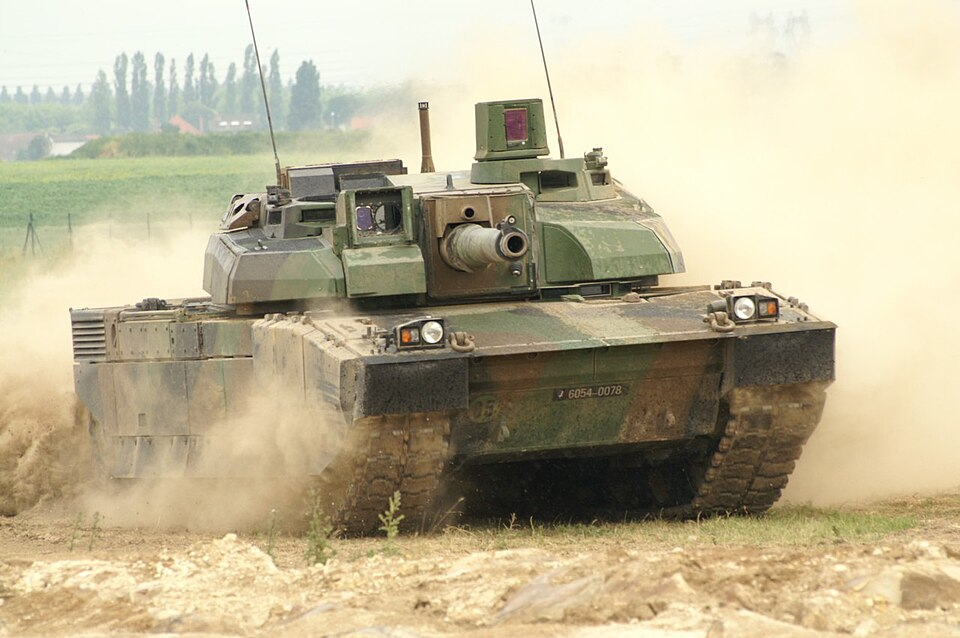
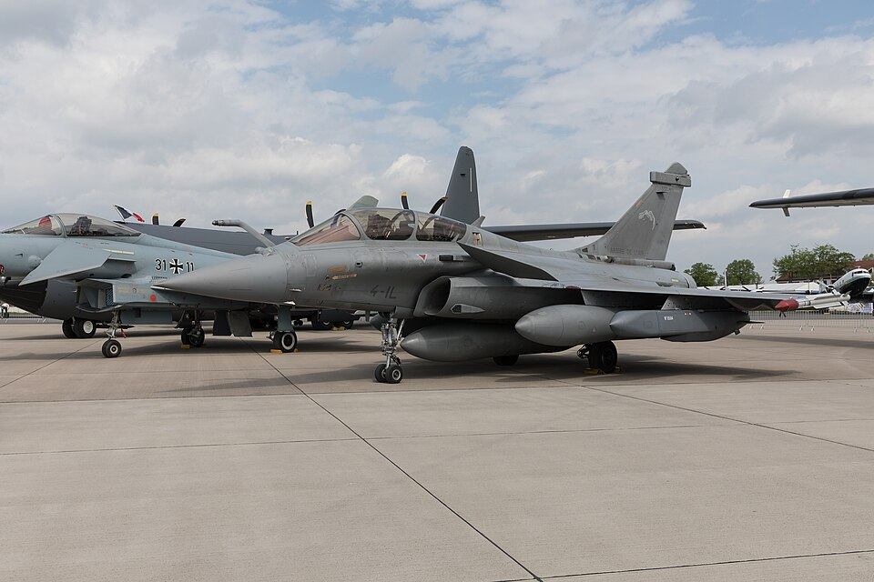
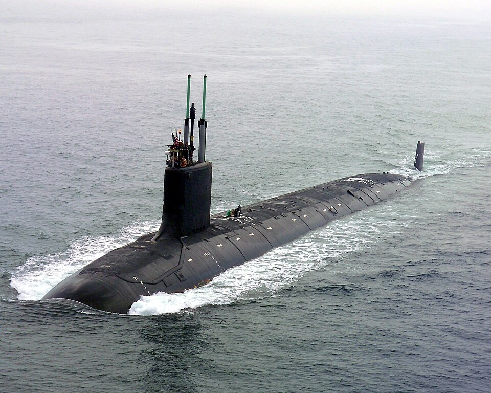
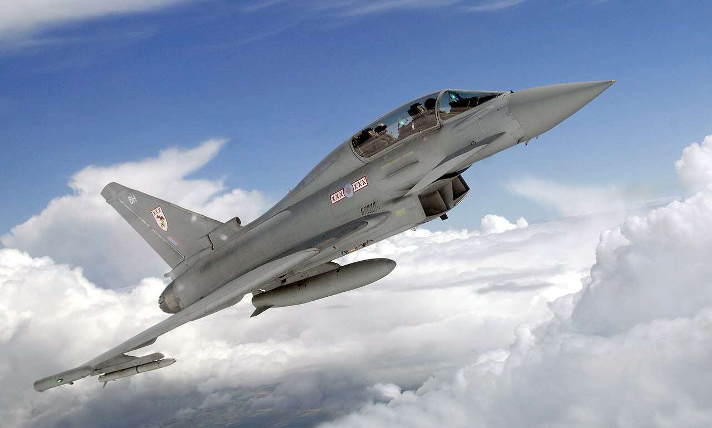
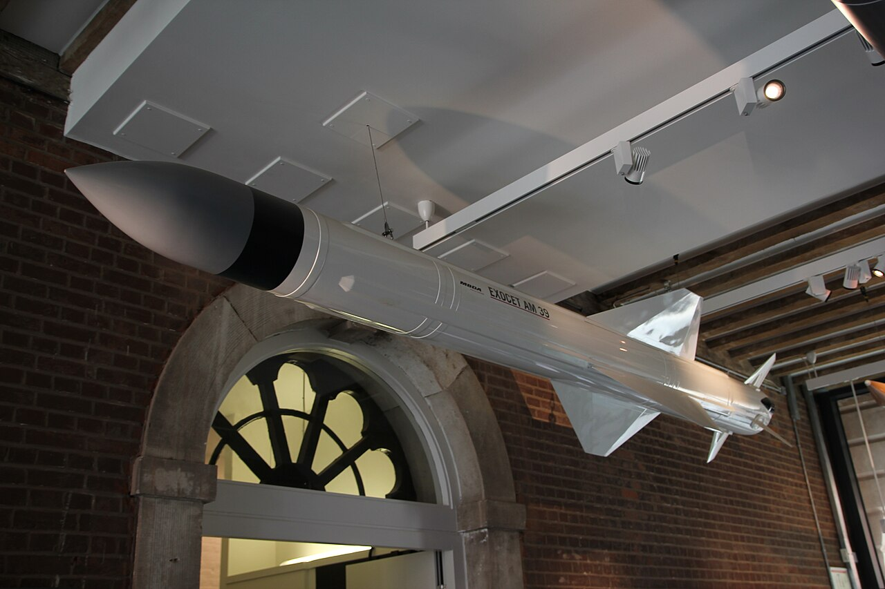
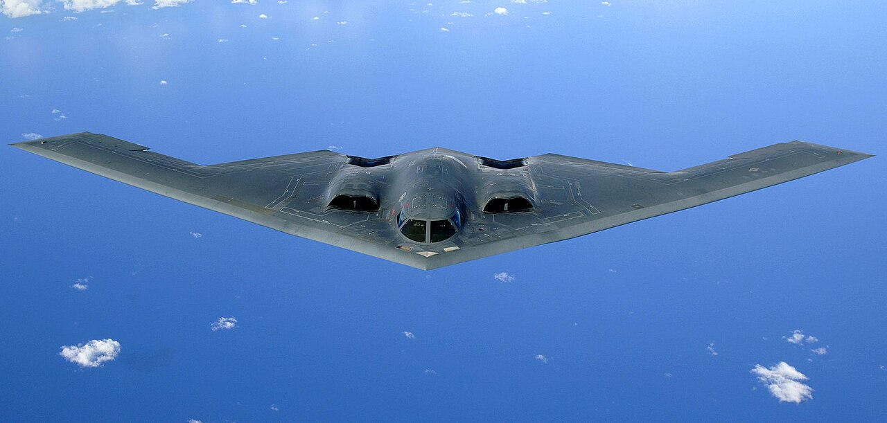

Explorer. Deviner.
Photos, cartes, histoire, stratégie et gestion : huit jeux pour découvrir 192 engins.
À toi de jouer.
Des cartes, des photos, des faits à vérifier et une base à développer. Chaque jeu fonctionne aussi sur téléphone.
8 jeux disponibles

01 / GÉOGRAPHIED’où vient cet engin ?Observe un char, un avion, un navire ou un missile et trouve son pays sur la carte du monde. Cinq tentatives.
Jouer
02 / RECONNAISSANCEQuel est cet engin ?Une photo, quatre propositions ou une réponse à écrire. Choisis ta catégorie et la durée.
Jouer
03 / OBSERVATIONZoom mystèreLa photo se dévoile progressivement. Trouve vite le bon nom pour marquer plus de points.
Jouer
04 / HISTOIREChrono défenseReplace huit premiers vols dans l’ordre, en deux séries, puis consulte les dates officielles.
Jouer
05 / VÉRIFICATIONVrai ou faux ?Dix affirmations sur les engins. Une explication sourcée suit chaque réponse.
Jouer
06 / QUOTIDIENLe défi du jourUne photo par jour, identique pour tous. Une seule réponse et un résultat à partager.
Jouer 07 / STRATÉGIEAlerte radar
07 / STRATÉGIEAlerte radarIdentifie les pistes mobiles, laisse passer les amis et choisis la bonne défense contre les intrus fictifs.
Jouer 08 / GESTIONQG Radar
08 / GESTIONQG RadarDéveloppe ta base : onze unités, des opérations interactives, des réserves et un mode libre après la campagne.
JouerCrédits des photographies
- Leclerc — Daniel Steger · CC BY-SA 2.5 · Photo originale
- Rafale — Matti Blume · CC BY-SA 4.0 · Photo originale
- Classe Virginia — General Dynamics Electric Boat / U.S. Navy · domaine public · Photo originale
- Eurofighter Typhoon — SAC Scott Lewis RAF · OGL v1.0 · Photo originale
- Exocet — Tim Sheerman-Chase · CC BY 4.0 · Photo originale
- B-2 Spirit — Staff Sgt. Bennie J. Davis III · Public domain · Photo originale
Ta sélection. Ta progression.
Sans compte. Collection, scores, questions à réviser et campagne QG peuvent être conservés dans un fichier.